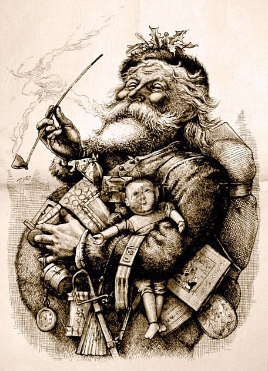
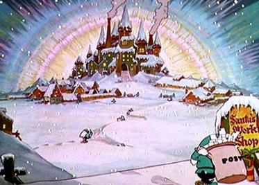

Who is Santa Claus?

Santa Claus is based on a real person, St. Nicholas.
St. Nicholas, or Sinter Klaas in Dutch, was a very shy man and wanted to give money to poor people without them knowing about it. It is said that one day, he climbed the roof of a house and dropped a purse of money down the chimney. It landed in the stocking which a girl had put to dry by the fire! This may explain the belief that Father Christmas comes down the chimney and places gifts in children's stockings.
When the Dutch introduced Sinter Klaas to the Americans they called him Santa Claus.
Santa Claus is generally depicted as a portly, jolly, white-bearded man—sometimes with spectacles—wearing a red coat with white fur collar and cuffs, white-fur-cuffed red trousers, a red hat with white fur and black leather belt and boots and who carries a bag full of gifts for children. This image became popular in the United States and Canada in the 19th century due to the significant influence of the 1823 poem "A Visit from St. Nicholas" and of caricaturist and political cartoonist Thomas Nast. This image has been maintained and reinforced through song, radio, television, children's books, films, and advertising.
Santa's workshop

Santa's workshop is the workshop where Santa Claus is said to make the toys and presents given out at Christmas. In Santa Claus mythology, the "workshop" is a sprawling commune located at the North Pole or in Lapland. In addition to housing the factory where toys are either manufactured or distributed by the elves, the complex also houses the residence of Santa Claus, his wife, companions and all of the reindeer
In 1879, Thomas Nast revealed to the world in a series of drawings that Santa's workshop is at the North Pole (specifically the North Magnetic Pole, due to the aurora borealis being centered on it and the fact that the workshop was on land, properties that at the time described the magnetic pole [which was under the Canadian Arctic Archipelago at the time; the magnetic pole has since drifted off to sea] but not the geographic one). The Canada Post postal code for the workshop is H0H 0H0. The United States Postal Service recommends mail to Santa's workshop be sent to North Pole, Alaska, ZIP code 99705.
Ho, ho, ho
Ho ho ho is the way that many languages write out how Santa Claus laughs. "Ho, ho, ho! Merry Christmas!" It is the textual rendition of a particular type of deep-throated laugh or chuckle, most associated today with Santa Claus and Father Christmas.
The laughter of Santa Claus has long been an important attribute by which the character is identified, but it also does not appear in many non-English-speaking countries. The traditional Christmas poem A Visit from St. Nicholas relates that Santa has:
. . . a little round belly
That shook when he laugh'd, like a bowl full of jelly